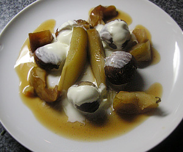

Maronen Plausch
4,5 von 6Ca. 800 g Maroni einschneiden und 10 Min in Wasser kochen. Abgiessen und schälen. 1 Vanilleschote aufschneiden und mit 100 g Puderzucker in 2 dl naturtrübem Apfelsaft 10 min kochen. Maronen dazu und weitere 20 Min kochen. 2 Äpfel und eine Birne schneiden, in Zitronensaft wenden und in den Topf beigeben. Nochmals 15 Min kochen lassen. Mit Schlagrahm servieren.
